2B2 - Cartographie dynamique et géodataviz - C. CUNTY
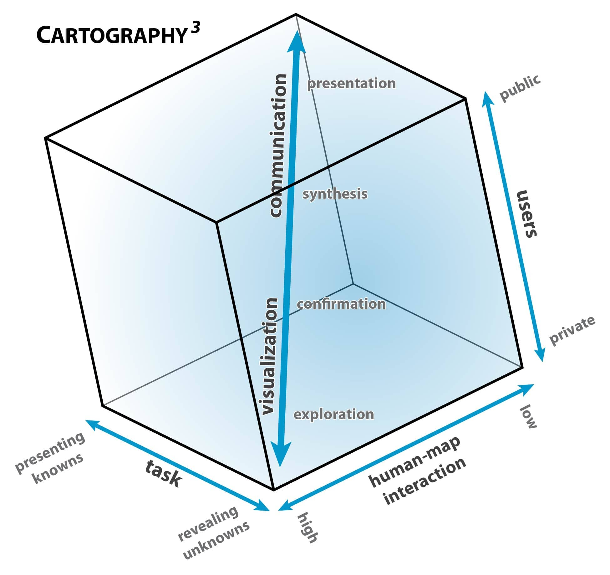Dans le cadre du Master de Géographies Numériques et du cours Cartographie dynamique et géodataviz, dispensé par C. Cunty, ce projet prend la forme d’une page web de veille cartographique hebdomadaire. L’objectif est de constituer un portfolio évolutif, rassemblant chaque semaine une carte ou une géovisualisation jugée pertinente, innovante ou originale, accompagnée d’un court commentaire analytique.
Cette veille cartographique s’inscrit dans une réflexion théorique autour du "Cartography Cube" proposé par MacEachren en 1994, qui articule la cartographie selon trois dimensions fondamentales : le public visé (du privé au public), le niveau d’interactivité (du statique au dynamique) et la finalité de la carte (de l’exploration à la communication). Chaque production sélectionnée est ainsi positionnée au sein de ce cube conceptuel, afin d’interroger ses choix de représentation, ses usages et ses apports en matière de géovisualisation.
Titre : The Underwater Cables That Connect the World
Auteur : Publié par Robby Deming / Produite par Jan Paul Miene
Date de parution : 29 Septembre 2025
Cette carte statique / poster réalisée par Jan Paul Miene illustre le réseau mondial de câbles sous-marins qui assurent l’accès à Internet, ainsi que le taux de pénétration d’Internet par pays. Les lignes rouges représentent les câbles, les points leurs stations d’atterrissage, et les nuances de bleu indiquent le niveau d’accès à Internet des populations (Figure 1).

Figure 1 — Réseau mondial de câbles sous-marins zoomée
Elle montre une forte connectivité en Amérique du Nord et en Europe, tandis que l’Afrique reste moins bien desservie malgré la présence de certaines stations. La redondance des câbles entre certains continents vise à garantir une connexion plus fiable là où la demande est élevée (Figure 2).
La carte souligne aussi les impacts environnementaux potentiels de ces infrastructures et met en évidence les inégalités d’accès à Internet dans le monde, certaines régions restant encore peu ou pas connectées.

Figure 2 — Poster du réseau mondial de câbles sous-marins
Titre : Lighting the Way
Auteur : Publié par Robby Deming / Produite par Mike Huff et Ryan Huff
Date de parution : 6 Octobre 2025
Figure 3 — Les phares de la façade Atlantique
Cette carte, produite par Mike Huff et Ryan Huff, représente l’ensemble des phares situés le long des côtes de l’Amérique du Nord, en mettant l’accent sur la façade atlantique, le golfe du Mexique et certaines voies fluviales. Elle distingue les phares encore en activité de ceux qui sont désaffectés et fournit, pour certains d’entre eux, des informations précises telles que le nom, la date de construction et la hauteur.
Cette carte se démarque par des choix cartographiques originaux. Son orientation inhabituelle place la côte atlantique nord-américaine en haut de la carte, rompant avec la convention du nord en haut et proposant une perspective panoramique évoquant la vue d’un navigateur traversant l’océan Atlantique (Figure 3 et 4). Ce point de vue renforce la dimension narrative et immersive de la représentation.
Les phares constituent l’élément central de la carte. Leur répartition spatiale est soulignée par une symbolisation variée, utilisant différentes tailles et formes pour traduire leur ancienneté, leur hauteur et leur état de fonctionnement. Les phares actifs sont mis en évidence par une couleur jaune lumineuse, tandis que les phares hors service sont figurés en gris. Les couleurs chaudes appliquées aux zones maritimes à forte densité de phares attirent le regard et hiérarchisent l’information. Quelques parallèles et méridiens sont ajoutés pour le repérage, mais l’ensemble privilégie une approche thématique et esthétique centrée sur le patrimoine des phares.
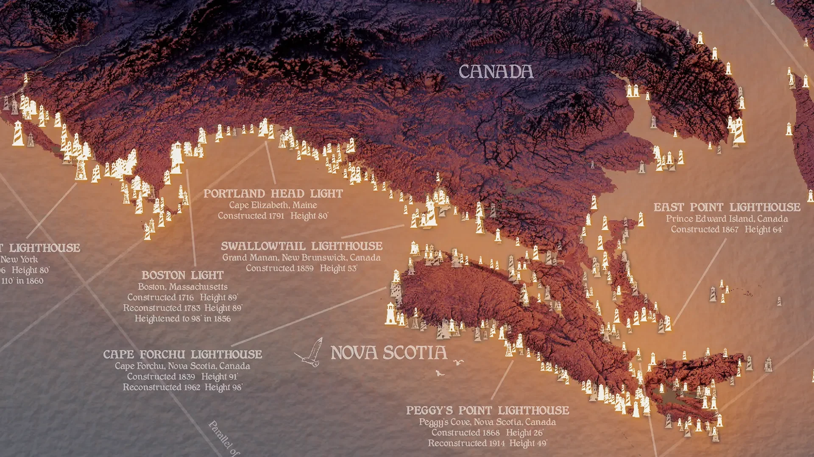Figure 4 — Les phares de la façade canadienne
Titre : Dans mon eau
Auteur : Association Générations Futures
Date de parution : 16 Octobre 2025
Cette carte interactive est proposée par l'association Générations Futures qui a pour objectifs de dénoncer les effets néfastes des polluants chimiques en général et des pesticides en particulier et de promouvoir leurs alternatives.
La carte interactive "tous polluants" permet de visualiser la qualité de l’eau potable à l’échelle nationale en fonction des principaux polluants chimiques : pesticides, nitrates, PFAS, CVM et perchlorates. Les données proviennent du contrôle sanitaire effectué par les Agences Régionales de Santé (ARS) et sont présentées pour chaque unité de distribution (UDI) en métropole, et par commune dans les DROM.
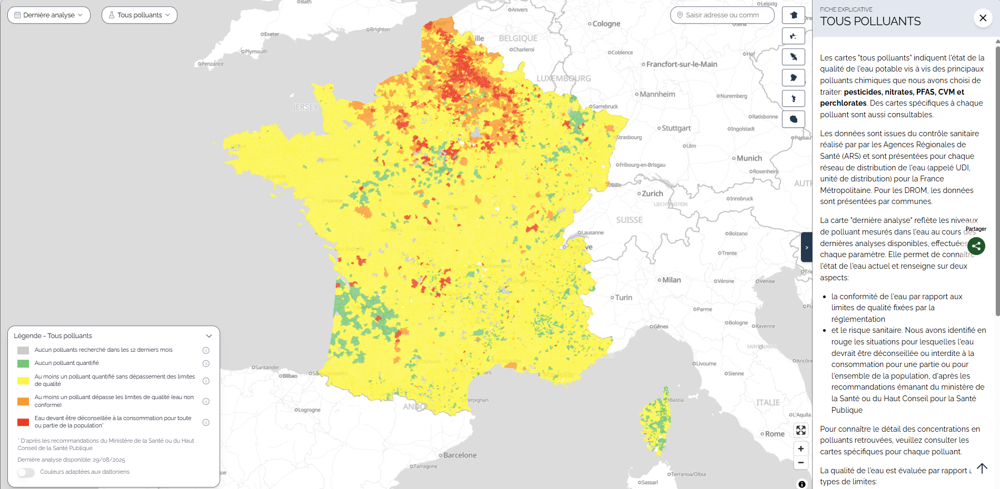Figure 5 — Interface du site "Dans mon eau"
La carte "dernière analyse" reflète les niveaux de polluant mesurés dans l'eau au cours des dernières analyses disponibles (Figure 5), effectuées sur chaque paramètre. Elle permet de connaître l'état de l'eau actuel et renseigne sur deux aspects :
Figure 6 — Zoom sur la commune de La Buissière concernant le niveau de polluant mesuré dans l'eau
On retrouve ici (Figure 6), l’analyse pour la commune de La Buissière (dont les derniers relevés datent de 2025) qui montre une eau polluée au CVM (Chlorure de Vinyl Monomère), qui est une substance chimique gazeuse et qui est classé cancérogène certain pour l’homme par le Centre international de recherche sur le cancer (CIRC) depuis 1987.
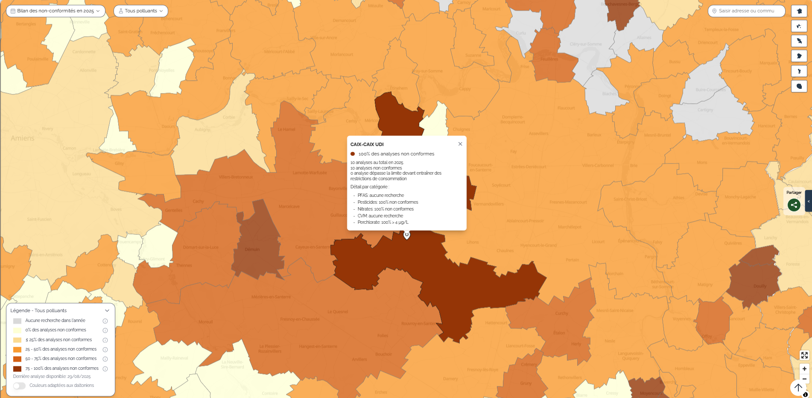Figure 7 — Zoom sur la commune de Caix concernant le bilan de non conformité de 2025
On retrouve dans cette seconde cartographie (Figure 7), les dernières analyses réalisées en 2025 sur la commune de Caix montrant qu’aucune des dernières analyses réalisées n’est conforme suivant les taux préconisés. On retrouve dans les paramètres de la carte, la possibilité de visualiser chacun des pesticides séparément, les bilans de non-conformité depuis 2020, ainsi que différents descriptifs de ces polluants et leurs effets sur la santé. L’objectif est de mettre en transparence la qualité de l’eau pour l'ensemble des populations pouvant être impactées par les différents polluants, dont les données sur ce sujet existent mais sont difficilement accessibles et complexes à comprendre.
Titre : L’IGN illustre la fragmentation forestière à partir de ses dernières données sur la
localisation des forêts françaises
Auteur : IGN
Date de parution : 23 Octobre 2025
Figure 8 — La couverture et la fragmentation des espaces forestiers calculées par sylvoécorégion
Cette carte publiée par l’Atelier de cartographie de l’IGN représente la fragmentation des espaces forestiers en France métropolitaine, en la mettant en relation avec le taux de boisement. Elle s’appuie sur un découpage du territoire en sylvoécorégions et permet de comparer, pour chacune d’elles, la proportion de surface forestière et le degré de fragmentation des forêts.
Sur le plan de la production, cette carte exploite les données récentes du Masque Forêt, une base de données de l’IGN qui localise les forêts françaises selon la définition internationale de la FAO, en excluant certaines surfaces arborées à usage strictement agricole. À partir de ces données, il a été calculé un indicateur spécifique de fragmentation, la taille effective de maille (TEM), qui mesure la continuité ou la discontinuité des espaces forestiers.
D’un point de vue cartographique, la TEM est classée en trois niveaux de fragmentation (faible, moyenne, forte), permettant une lecture synthétique et comparative à l’échelle nationale (Figure 8). Cette information est croisée avec le taux de boisement, renforçant la dimension analytique de la carte. Le choix de cette double variable met en évidence que des territoires fortement boisés peuvent néanmoins être très fragmentés, ce qui enrichit l’interprétation spatiale.
Enfin, la carte repose sur un calcul volontairement « brut » de la fragmentation, lié aux géométries du Masque Forêt. Les limites méthodologiques sont clairement assumées : les continuités forestières transfrontalières ne sont pas prises en compte et certaines infrastructures sont considérées comme des coupures, même si elles ne constituent pas toujours de réelles barrières écologiques. La production cartographique privilégie ainsi une approche descriptive et comparative, destinée à illustrer des dynamiques territoriales plutôt qu’à fournir un diagnostic écologique définitif.
Titre : La trame vieux bois
Auteur : Ubiquiste
Date de parution : Novembre et Décembre 2025
On retrouve ici la production d’une série de trois cartes, produite par l’agence Ubiquiste, consacrée à la trame vieux bois à l’échelle de la Métropole de Lyon. Elles proposent une lecture progressive du territoire : d’abord l’identification des milieux favorables aux espèces saproxyliques, puis l’analyse de leur connectivité écologique, et enfin la hiérarchisation des secteurs à prospecter en priorité pour améliorer les connaissances naturalistes. Ensemble, elles forment un corpus cartographique à vocation à la fois scientifique et opérationnelle.
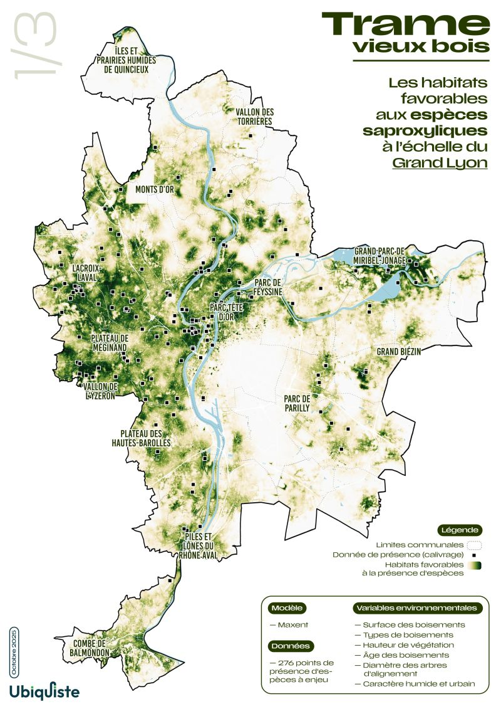Figure 9 — La trame vieux bois concernant les habitats favorables aux espèces saproxyliques à l'échelle du Grand Lyon
La première carte (Figure 9) repose sur un important travail de modélisation écologique. Elle s’appuie sur des modèles de niches écologiques construits à partir d’une centaine d’espèces saproxyliques et de plus de 1 500 données de présence issues de bases nationales et internationales, ensuite resserrées sur une quinzaine d’espèces à fort enjeu. Dix-sept variables environnementales ont été mobilisées (structure et maturité des boisements, hauteur de végétation, diamètre des arbres, humidité, caractère urbain, ...) afin de cartographier les zones offrant des conditions favorables à la présence potentielle de ces espèces. La carte synthétise ainsi une information complexe en un zonage lisible du potentiel écologique.
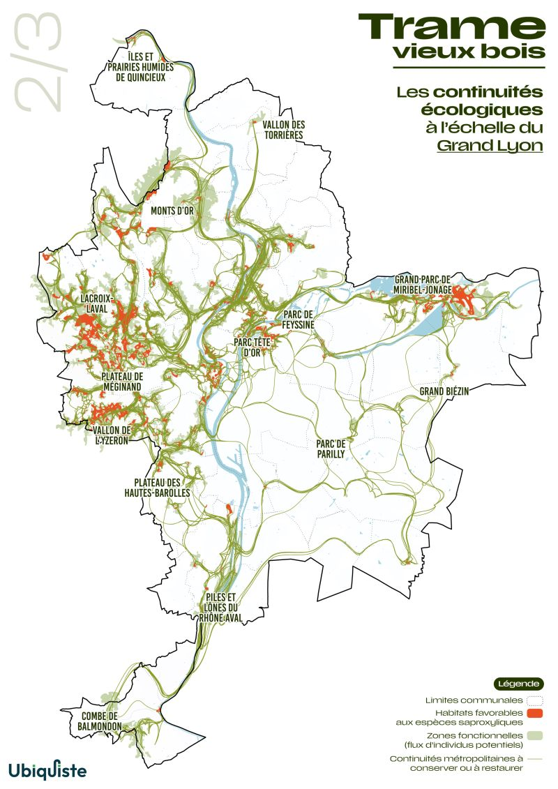Figure 10 — La trame vieux bois concernant les continuités écologiques à l'échelle du Grand Lyon
La deuxième carte (Figure 10) adopte une approche fonctionnelle et dynamique, en s’intéressant à la connectivité de la trame vieux bois. À partir des zones les plus favorables identifiées précédemment, les cartographes ont extrait certains éléments structurants du paysage (boisements et arbres d’alignement de grand diamètre) pour simuler les flux potentiels de dispersion des espèces. Le choix cartographique met ici en évidence des axes de circulation privilégiés, révélant une armature écologique souvent fragmentée, notamment en contexte urbain et périurbain, où les vieux bois sont rares.
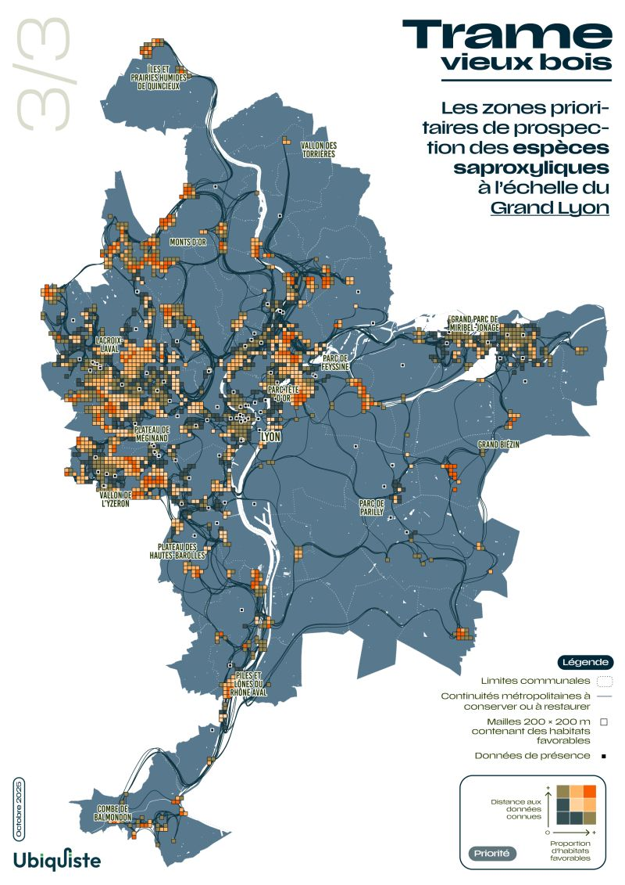Figure 11 — La trame vieux bois concernant les zones prioritaires de prospection des espèces saproxyliques à l'échelle du Grand Lyon
La troisième carte (Figure 11) prolonge cette démarche par une finalité opérationnelle. Elle croise le potentiel écologique des milieux avec l’absence ou l’éloignement des données d’observation existantes afin d’identifier les zones prioritaires à prospecter. Le raisonnement cartographique repose sur une hiérarchisation spatiale simple mais efficace, destinée à orienter les efforts de terrain et à optimiser la production de nouvelles connaissances. Dans l’ensemble, ces cartes illustrent une production cartographique exigeante, combinant données naturalistes, modélisation statistique et analyse spatiale. Elles privilégient une cartographie d’aide à la décision, où la représentation graphique sert autant à comprendre les dynamiques écologiques qu’à guider l’action publique et scientifique sur le territoire.
Titre : Wind energy across the U.S. in 3D
Auteur : Mike Peckham
Date de parution : 6 Novembre 2025
Figure 12 — Interface du site représentant la production d’énergie éolienne aux États-Unis
Cette carte interactive réalisée par Mike Peckman dans le cadre du 30DayMapChallenge 2025, sur le thème “Dimensions”, représente la production d’énergie éolienne aux États-Unis à l’aide d’une visualisation en 3D extrudée. Elle montre les États et les comtés dont les surfaces sont élevées verticalement afin de traduire des indicateurs énergétiques, comme la puissance totale installée (en MW) et le nombre d’éoliennes (Figure 12). La carte joue sur le passage entre une vue 2D et 3D pour renforcer la perception des volumes et des contrastes spatiaux.
Sur le plan de la production, le travail repose sur un important traitement de données spatiales. Plus de 76 000 points représentant des éoliennes ont été intégrés et rattachés aux limites administratives des États et des comtés à l’aide de GeoPandas. Cette jointure spatiale a permis de calculer, pour chaque entité polygonale, plusieurs indicateurs agrégés : nombre total d’éoliennes, puissance totale en mégawatts et puissance moyenne par turbine. Ces résultats ont ensuite été fusionnés aux couches géographiques correspondantes.
L’aspect cartographique repose fortement sur la manipulation de la perspective : le simple changement d’inclinaison de la carte permet d’alterner entre une lecture plane et une lecture volumétrique. L’ensemble illustre une cartographie exploratoire et expérimentale, où la dimension visuelle et la 3D servent avant tout à mettre en valeur les ordres de grandeur et les disparités spatiales de la production éolienne.
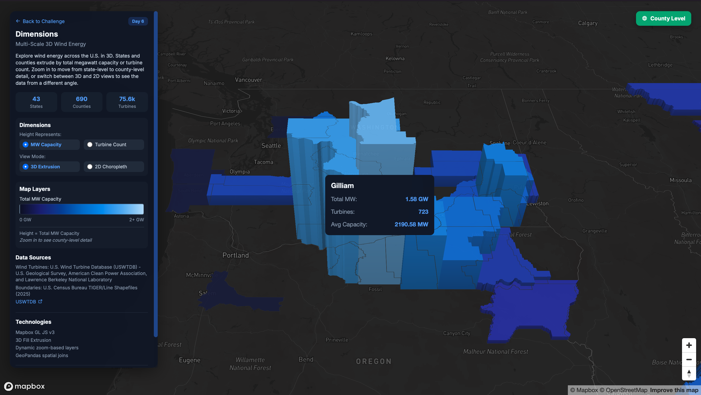Figure 13 — Extrusion 3D montrant des informations du comté de Gilliam concernant MW Capacity
Par exemple, on retrouve ici le comté de Gilliam (à l’Ouest des États-Unis), concernant MW Capacity, l’extrusion 3D du polygone traduit une capacité totale installée très élevée, avec 1,58 GW (Figure 13). La hauteur du volume est directement proportionnelle à cette valeur agrégée, ce qui place visuellement Gilliam parmi les comtés les plus marquants en matière d’éolien. Cette extrusion synthétise la concentration énergétique du territoire : un grand nombre d’installations regroupées dans une entité administrative relativement restreinte, donnant un effet de « pilier » énergétique en 3D.

Figure 14 — Vue planaire montrant des informations du comté de Gilliam concernant le nombre d’éoliennes
Tandis que, toujours pour le comté de Gilliam, en vue planaire (sans extrusion), le nombre d’éoliennes (723 turbines) est représenté par la couleur du comté (Figure 14). Gilliam apparaît ainsi dans une classe chromatique élevée, indiquant une densité importante de turbines par rapport aux autres territoires. Cette approche permet une lecture immédiate des contrastes spatiaux, sans recourir au volume, et complète efficacement la 3D en mettant l’accent sur la distribution des infrastructures plutôt que sur la puissance.
Titre : Carte interactive du Monopoly
Auteur : Jean-Marc Viglino
Date de parution : 11 Novembre 2025
Figure 15 — Les rues de Paris réellement utilisées dans le jeu Monopoly
Cette carte réalisée par Jean-Marc Viglino dans le cadre du 30DayMapChallenge 2025, propose une représentation originale et ludique de Paris en s’appuyant sur l’univers du Monopoly. Elle ne cherche pas à être un simple plan de localisation, mais constitue une véritable carte thématique qui met en relation un objet culturel populaire, le plateau du Monopoly, avec la géographie réelle de la capitale française (Figure 15).
Le principe est de replacer sur un fond de carte réel les différentes rues qui composent les propriétés du Monopoly dans sa version française. Chaque rue du jeu est représentée par un segment coloré correspondant à la couleur de son groupe sur le plateau. On retrouve ainsi les séries marron, bleu clair, rose, orange, rouge, jaune, vert et bleu foncé, disposées à leur emplacement exact dans Paris.
La carte met également en évidence un aspect sociogéographique intéressant : la hiérarchie des prix dans le Monopoly reflète assez fidèlement le prestige des quartiers parisiens au moment de la création du jeu. Les rues les moins chères, comme le boulevard de Belleville ou la rue Lecourbe, se situent dans des secteurs historiquement plus populaires ou périphériques. À l’inverse, les cases les plus chères, comme l’avenue des Champs-Élysées ou la rue de la Paix, correspondent à des lieux emblématiques du luxe, du commerce haut de gamme et du pouvoir économique parisien. Le jeu apparaît donc comme une sorte de photographie simplifiée des inégalités urbaines du Paris du début du XXe siècle.
D’un point de vue cartographique, le fond utilisé provient d’une base de données géographiques de l’IGN (mention BDTopo, dont les informations peuvent être lues dans des pop-ups liés aux rues). On y reconnaît le réseau viaire réel, la Seine, les grandes infrastructures et la trame urbaine générale.
L’intérêt principal de cette carte réside donc dans sa double lecture. Elle permet d’une part de mieux comprendre l’ancrage réel des rues du Monopoly et de prendre conscience que ce jeu repose sur une géographie bien réelle. D’autre part, elle montre comment une carte peut être utilisée pour raconter une histoire culturelle et sociale, en reliant un jeu de société mondialement connu à l’organisation spatiale et aux contrastes socio-économiques de Paris. C’est un bel exemple de cartographie de médiation, qui rend la géographie accessible, parlante et ludique.
Titre : Out of this World
Auteur : ESRI France
Date de parution : 18 Novembre 2025
Figure 16 — Portion du pôle Sud de la Lune
Cette carte, réalisée par Gaëtan Clément du groupe ESRI France dans le cadre du 30DayMapChallenge 2025, a une particularité : elle nous emmène bien au-delà de nos repères habituels, elle représente une portion du pôle Sud de la Lune, aujourd’hui étudiée de près dans le cadre de la mission Artemis III. L’objectif est d’identifier les zones les plus adaptées pour un futur atterrissage pour de futures missions habitées (Figure 16).
Le fond cartographique met en valeur le relief lunaire grâce à des données orbitales à haute résolution. Sur cette base topographique viennent se superposer deux informations clés. Les zones en pointillés violets correspondent aux sites candidats à l’atterrissage, sélectionnés selon des critères de sécurité, d’ensoleillement et d’intérêt scientifique. Les zones hachurées en rouge indiquent quant à elles les régions en ombre permanente, situées au fond de certains cratères polaires. Privées de lumière solaire, ces zones pourraient abriter de la glace d’eau, ressource stratégique pour de futures missions longues.
L’intérêt cartographique de cette représentation réside dans le croisement de données physiques et opérationnelles : relief, lumière, contraintes d’exploration et potentiel en ressources sont réunis sur un même support spatial. La carte devient ainsi un véritable outil d’aide à la décision, permettant d’anticiper les conditions d’un séjour humain sur la Lune.
Mais cette carte est aussi intéressante pour une autre raison : elle ne représente pas la Terre. Cartographier la Lune, c’est montrer que la géomatique ne se limite plus à notre planète. Les mêmes principes, acquisition de données, modélisation du terrain, analyse spatiale, représentation thématique, s’appliquent désormais à des territoires extraterrestres. La carte devient un pont entre exploration spatiale et sciences géographiques.
En observant cette surface lointaine avec les codes visuels de la cartographie, on transforme un monde inconnu en un espace lisible, analysable et, à terme, peut-être habitable. Ce type de carte illustre parfaitement comment la cartographie participe déjà à écrire la géographie des futurs territoires humains, au-delà de la Terre.
Titre : Cultures de Tabarjal, dans la région d’Al-Jawf en Arabie Saoudite
Auteur : Maëlle Tardif
Date de parution : 29 Novembre 2025
Figure 17 — Vue satellite des cultures agricoles de Tabarjal superposée à un quadrillage
Cette carte réalisée par Maëlle Tardif dans le cadre du 30DayMapChallenge 2025 consacrée au thème "Raster", présente une vue satellite spectaculaire des cultures agricoles de Tabarjal, située dans la région d'Al-Jawf en Arabie Saoudite.
L'image révèle un paysage désertique transformé par l'agriculture intensive utilisant des systèmes d'irrigation à pivot central, créant une mosaïque de cercles parfaits. Cette réalisation cartographique a été élaborée en combinant plusieurs outils professionnels : le fond cartographique provient de World Imagery sur ArcGIS Pro, enrichi par des retouches effectuées dans Photoshop, et finalisé dans Illustrator.
D'un point de vue cartographique, cette carte illustre parfaitement l'utilisation des données raster en géomatique. Contrairement aux données vectorielles qui représentent les phénomènes géographiques par des formes géométriques définies mathématiquement, les données raster s'appuient sur une matrice de pixels dont chaque cellule contient une valeur spécifique.
L'intérêt cartographique majeur de cette représentation réside dans la superposition et le contraste de géométries. Le désert présente naturellement des formes organiques et irrégulières, tandis que les pivots d'irrigation imposent une géométrie circulaire parfaite et répétitive. Sur le plan de la composition cartographique, bien que chaque pivot crée individuellement un cercle, leur disposition régulière produit un effet de quadrillage quasi-parfait (Figure 17). Cette organisation génère une esthétique presque abstraite, où la répétition des formes circulaires produit un rythme visuel particulièrement harmonieux.
Cette carte démontre ainsi la puissance des données raster pour révéler des patterns géométriques extraordinaires et illustre comment l'imagerie satellite constitue un outil cartographique exceptionnel pour visualiser et comprendre les transformations territoriales à différentes échelles.
Titre : La crue de 1910 reprojetée sur le Paris contemporain
Auteur : Ilyas Hammouti
Date de parution : 7 Décembre 2025
Figure 18 — L'emprise historique de la crue de la Seine de 1910 sur le tissu urbain actuel de Paris et de la petite couronne
Cette carte, réalisée par Ilyas Hammouti, propose une visualisation cartographique particulièrement évocatrice en superposant l'emprise historique de la crue de la Seine de 1910 sur le tissu urbain actuel de Paris et de la petite couronne. L'exercice consiste à projeter un événement historique majeur sur la réalité contemporaine, créant ainsi une carte prospective qui sert d'outil de sensibilisation aux risques d'inondation.
L'intérêt cartographique principal réside dans la superposition de deux temporalités distinctes : l'événement de 1910 et l'occupation du sol actuel. Cette approche diachronique permet de mesurer visuellement l'évolution de la vulnérabilité territoriale. La zone inondable, représentée par une teinte bleue translucide, contraste avec le fond de carte contemporain qui révèle la densité du tissu urbain. Cette transparence est essentielle car elle permet d'identifier simultanément les zones submersibles et les infrastructures affectées, créant une lecture à double niveau particulièrement informative (Figure 18). De plus, le fond de carte contemporain ancre la simulation dans la réalité actuelle de l'agglomération parisienne et permet d'identifier précisément le réseau viaire et les masses bâties concernées.
On observe, dans un panneau latéral, des données statistiques quantifiées quant aux impacts divers de cette crue : près de mille milliards d'euros de valeur foncière affectée, 2,5 millions de Franciliens touchés, 115 stations de métro et RER inondées, et 32 kilomètres d'autoroute exposés. Ces chiffres transforment la carte d'un simple exercice de visualisation spatiale en un véritable outil d'évaluation des impacts socio-économiques.
Cette carte constitue un excellent exemple de cartographie des risques appliquée à la communication. En mobilisant des outils géomatiques pour actualiser un événement historique, elle démontre l'évolution de l'exposition territoriale et souligne l'importance de la prévention. La carte devient ainsi un outil de médiation entre l'histoire et la gestion contemporaine des risques urbains, illustrant comment la cartographie peut servir de support à la réflexion prospective en matière d'aménagement du territoire.
Titre : Les heatmaps Strava comme outil de révélation des pratiques sportives territoriales
Auteur : Publié par Léos Maere
Date de parution : 9 Décembre 2025
Ces trois cartes, publiées par Léos Maere, présentent des heatmaps (cartes de chaleur) générées par Strava pour visualiser la densité des activités sportives en France, respectivement pour la randonnée (Figure 19), le cyclisme (Figure 20) et la course à pied (Figure 21) ; même si d’autres sont accessibles sur le site Strava, avec un compte peut-être payant.
Une heatmap est une technique de visualisation cartographique qui représente l'intensité d'un phénomène par un gradient de couleurs, allant du froid (bleu ou noir pour les zones de faible activité) au chaud (orange, rouge ou blanc pour les zones de forte concentration). Ces cartes agrègent des millions de traces GPS enregistrées par les utilisateurs de l'application, créant ainsi une représentation visuelle de la fréquentation sportive réelle du territoire.
L'intérêt cartographique majeur de ces représentations réside dans leur capacité à révéler les pratiques spatiales effectives des sportifs, bien au-delà des statistiques traditionnelles. Contrairement aux cartes thématiques classiques, les heatmaps Strava s'appuient sur des traces comportementales réelles, générant une granularité spatiale exceptionnelle. On distingue non seulement les régions privilégiées, mais également les itinéraires précis empruntés, révélant ainsi la micro-géographie des pratiques sportives.
La sémiologie graphique employée repose sur un code couleur intuitif où l'intensité lumineuse traduit directement la densité d'activité. Les zones les plus fréquentées apparaissent en blanc éclatant ou orange vif, tandis que les territoires moins parcourus s'affichent en noir. Ce contraste permet une lecture immédiate des disparités territoriales. Le fond de carte sombre accentue la visibilité des traces et crée un effet esthétique saisissant où les réseaux se dessinent naturellement par l'accumulation des pratiques.
Ces heatmaps démontrent le potentiel considérable des données géolocalisées pour l'aménagement du territoire. Si ces données étaient davantage disponibles en open data, les collectivités pourraient identifier avec précision les sites à forte attractivité sportive méritant des investissements en infrastructures. Les heatmaps Strava constituent ainsi un exemple éloquent de la manière dont les données massives issues des pratiques numériques peuvent éclairer les politiques publiques et révéler le potentiel sportif souvent méconnu des territoires.
Titre : carte.gouv.fr
Auteur : IGN
Date de parution : 15 Décembre 2025 (lancement de la plateforme)

Figure 22 — Plateforme cart.gouv.fr
Pour cette semaine, il ne s'agit pas d'une carte ou d'une visualisation en particulier, mais plutôt de la mise en place d'une plateforme : carte.gouv.fr. Lancée par l'IGN, cette initiative marque un tournant important dans l'accès aux données géographiques et aux outils cartographiques en France (Figure 22).
A son terme Carte.gouv.fr regroupera et unifiera plusieurs services historiques de l'IGN : geoservices.ign.fr, espacecollaboratif.ign.fr, geoportail.gouv.fr ainsi que macarte.ign.fr. Cette consolidation offre désormais une interface unique et cohérente pour la création, la consultation et le partage de cartes en ligne, simplifiant l'expérience utilisateur qui devait auparavant naviguer entre différents portails.
La plateforme permet de créer des cartes personnalisées sans compétences techniques avancées, en choisissant parmi une large gamme de fonds de plan : cartes topographiques, photographies aériennes, plan IGN, cartes historiques de Cassini, parcelles cadastrales, cartes géologiques ou réseaux de transport. Cette diversité permet d'adapter la visualisation à chaque besoin spécifique.
Un aspect particulièrement intéressant réside dans la couverture complète des départements et régions d'outre-mer. Contrairement à de nombreux outils SIG qui négligent ces territoires, carte.gouv.fr accorde une attention équitable à la Guadeloupe, la Martinique, la Guyane, La Réunion, Mayotte et aux collectivités d'outre-mer. Cette inclusion permet enfin de visualiser l'ensemble du territoire français, comblant une lacune récurrente dans les systèmes d'information géographique.
La plateforme a développé de nombreuses fonctionnalités notamment d'export, d’intégration web, l'import de ses propres données et de partager ses productions (Figure 23), la possibilité de sélectionner des fonds de cartes différents proposés sous forme de catalogue (Figure 24), ainsi que des outils de gestion cartographique, comme le calcul d’itinéraires, le calcul de surface ou encore la possibilité de créer une courbe d’altitude le long d’un trajet (Figure 25).
Carte.gouv.fr répond à un enjeu de souveraineté numérique en proposant une alternative française aux solutions commerciales internationales. En s'appuyant sur l'expertise de l'IGN, elle garantit qualité et fiabilité des données, constituant un commun numérique accessible à tous. La plateforme représente ainsi une avancée significative dans la démocratisation des outils de géomatique et l'appropriation collective des enjeux territoriaux, métropolitains comme ultramarins.
Titre : Le voyage du Père Noël
Auteur : arx iT
Date de parution : 11 Décembre 2025
Figure 26 — Le site du voyage du Père Noël
Qui a dit que la cartographie ne pouvait pas être magique ? Entre deux analyses de données géospatiales et la rigueur des systèmes d'information géographique, il est parfois rafraîchissant de rappeler que la géomatique peut aussi servir à suivre... le Père Noël ! Et oui, même le plus célèbre livreur du monde a droit à son tracking en temps réel. Après tout, si Amazon peut tracer ses colis, pourquoi pas les cadeaux de Noël ?
Cette carte interactive, réalisée par arx iT, propose une expérience cartographique ludique en permettant de suivre le trajet du Père Noël à travers le monde durant la période des fêtes (Figure 26). Publiée spécialement pour Noël, cette application combine technologie géospatiale avancée et esprit festif pour créer une expérience immersive destinée aussi bien aux enfants qu'aux adultes curieux de géographie.
D'un point de vue cartographique, cette réalisation s'appuie sur la technologie ArcGIS développée par Esri, qui garantit une fluidité de navigation et une précision géographique remarquable, transformant un concept fantaisiste en véritable application cartographique fonctionnelle.
L'aspect interactif constitue l'un des principaux intérêts de cette carte. Les utilisateurs peuvent naviguer librement sur le globe, zoomer sur différentes régions, et suivre la progression du Père Noël qui traverse successivement les fuseaux horaires en suivant la nuit de Noël. Cette dimension dynamique transforme la carte statique en un récit cartographique évolutif où la position change en fonction de l'heure réelle. Le tracé matérialise visuellement le concept des fuseaux horaires et de la rotation terrestre, offrant une dimension pédagogique implicite sur la géographie mondiale.
Les données reposent sur un parcours prédéfini simulant la tournée mondiale, intégrant les principales agglomérations selon un ordre logique respectant la chronologie nocturne, et cela grâce à un script SQL. Bien que fictives concernant le personnage, la carte s'appuie sur des fonds cartographiques réels et précis, créant un équilibre subtil entre imagination festive et rigueur géographique. Cette approche maintient la magie du conte tout en ancrant l'expérience dans une représentation fidèle de notre planète.
Cette carte interactive illustre comment la cartographie peut dépasser sa fonction utilitaire pour devenir vecteur de narration et d'émerveillement. En mobilisant des technologies SIG sophistiquées au service d'un récit universel, elle démontre la polyvalence des outils géomatiques. Au-delà de sa légèreté apparente, elle constitue également un excellent exemple de vulgarisation géographique, familiarisant les utilisateurs, notamment les plus jeunes, avec la navigation cartographique interactive, les échelles géographiques et la diversité des territoires mondiaux.
Titre : Who celebrates the new year first and last? It’s complicated
Auteur : National Geographic - Carte par Rosemary Wardley - Article par Amy McKeever
Date de parution : 27 Décembre 2022
Figure 27 — Les fuseaux horaires en heures de décalage par rapport au temps universel coordonné (Universal Time Coordinated ou UTC en anglais)
Ces cartes réalisées par Rosemary Wardley dans un article du National Geographic, proposent une approche géovisuelle originale de célébration du Nouvel An à l'échelle planétaire. Les cartes produites illustrent la complexité de la ligne internationale de changement de date, qui suit théoriquement le 180e méridien mais dont le tracé réel révèle de multiples déviations et sinuosités (Figure 27).
Cette représentation cartographique met en évidence comment les choix politiques et géographiques des États façonnent la géométrie de cette ligne invisible qui structure notre rapport au temps.
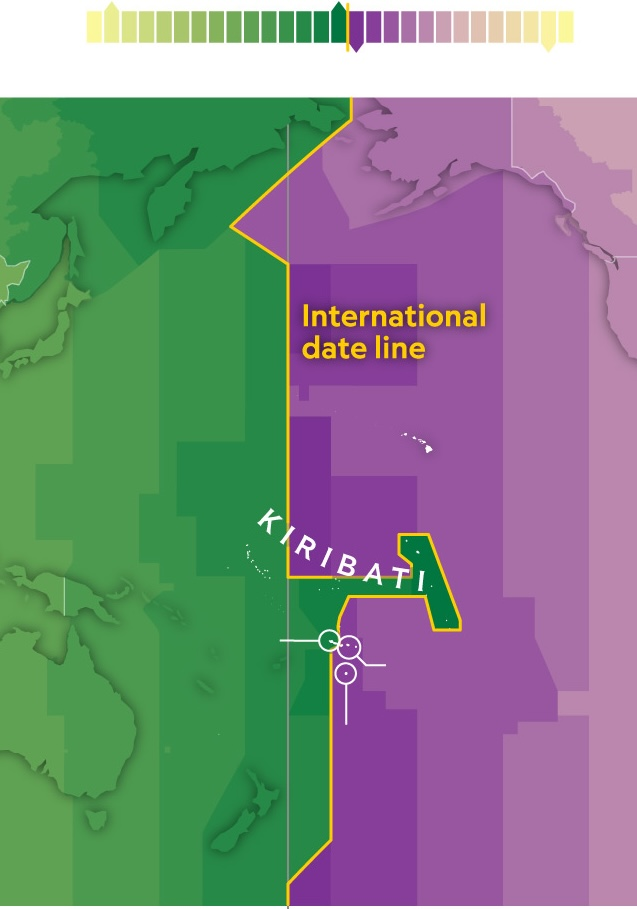Figure 28 — Les fuseaux horaires en heures de décalage par rapport au UTC zoomée sur les îles Kiribati
La cartographie dévoile la distribution spatiale des 38 fuseaux horaires actuellement en vigueur, dont certains présentent des décalages inhabituels de 30 ou 45 minutes, créant une mosaïque temporelle complexe à représenter. Les cartes localisent précisément les extrémités de cette course temporelle : l'île Kiritimati dans l'archipel de Kiribati pour le premier accueil de l'année (Figure 28), et Niue avec les Samoa américaines pour les derniers, générant un écart cartographiable de 25 heures en temps UTC.
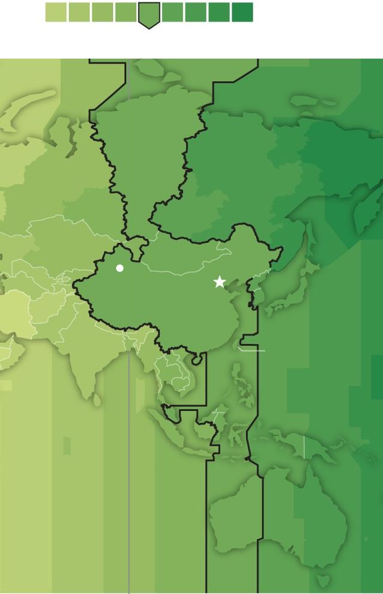Figure 29 — Les fuseaux horaires en heures de décalage par rapport au UTC zoomée sur la Chine
L'article met également en lumière des anomalies cartographiques remarquables, comme le fuseau horaire unique de la Chine (Figure 29) qui s'étend sur une distance où cinq zones seraient géographiquement justifiées, ou encore le repositionnement de Samoa de part et d'autre de la ligne de date en 2011, illustrant la dimension politique et économique de ces choix de représentation temporelle.
Titre : Projet de recherche : UX Mobility - Multi-User Walkability Route Planner
Auteur : Société Transform Transport
Date de parution : 24 Mars 2025
Figure 30 — Schéma du projet UX Mobility
Il s’agit ici de présenter le projet UX Mobility qui développe un planificateur d'itinéraires piétons multi-utilisateurs pour la ville de Milan, centré sur une approche cartographique innovante de la marchabilité urbaine (Figure 30). La structure méthodologique s'articule en trois phases : collecte d'indicateurs via enquête auprès de 290 répondants, construction de jeux de données géospatiaux, et développement d'un système de routage Python qui génère des itinéraires personnalisés selon les préférences utilisateurs.
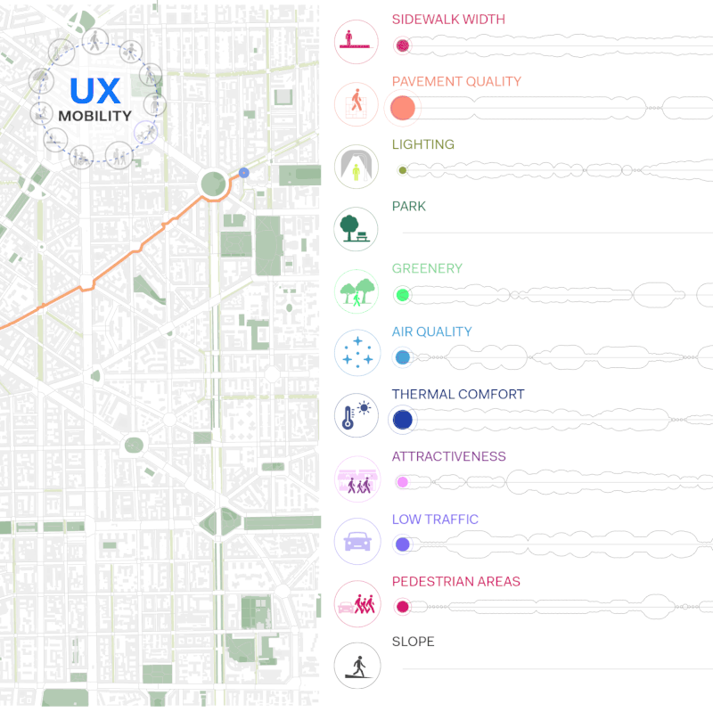Figure 31 — Animation d'un trajet selon les 12 indicateurs de marchabilité
Le cœur cartographique du projet repose sur l'intégration de 12 indicateurs de marchabilité (largeur de trottoir, qualité du revêtement, pente, passages piétons, éclairage, parcs, arbres, qualité de l'air, confort thermique, attractivité, zones à faible trafic, zones piétonnes) dans le graphe de réseau viaire milanais construit à partir d'OpenStreetMap. Différentes cartes représentant les indicateurs permettent d'identifier les segments de rues favorables ou pénalisants pour la marche (Figure 31). Le système cartographique distingue quatre profils d'utilisateurs (clusters) identifiés par K-means clustering, chacun générant des parcours différenciés visualisés par des cartes comparatives animées montrant comment les préférences influencent la géométrie des trajets proposés face au chemin le plus court.
Ce projet démontre l'intérêt d'une cartographie subjective et inclusive de la mobilité urbaine. En combinant données quantitatives (SIG, données ouvertes) et qualitatives (préférences déclarées), il produit des représentations qui transcendent la simple optimisation métrique pour intégrer l'expérience utilisateur différenciée, proposant ainsi un outil d'aide à la décision pour urbanistes et décideurs politiques vers des environnements urbains plus adaptatifs et équitables.
Titre : BFMerde réinvente la géographie du Groenland
Auteur : BFM TV
Date de parution : 14 Janvier 2026
Figure 32 — Extrait de l'émission de BMF TV
Cette semaine, nous pouvons discuter d’une carte qui a fait grandement polémique notamment dans le contexte géopolitique actuel. BFM TV a diffusé une carte du monde pour illustrer les enjeux géopolitiques autour du Groenland convoité par Donald Trump. Cette représentation présente des distorsions géographiques majeures : le Groenland apparaît presque aussi vaste que l'Afrique alors qu'en réalité l'Afrique est 14 fois plus grande (30 millions km² contre 2,1 millions km²). Plus surprenant encore, l'Islande a été déplacée au sud de la péninsule ibérique, entre le Portugal et le Maroc, à des milliers de kilomètres de sa position arctique réelle (Figure 32). La projection utilisée positionne également la France beaucoup trop au nord, créant une proximité illusoire avec le Groenland alors que celui-ci se situe à la latitude de la Scandinavie.
La chaîne d'information continue, souvent critiquée pour son traitement de l'actualité, s'est retrouvée au cœur d'une polémique virale sur les réseaux sociaux. De nombreux internautes ont évoqué non pas une simple erreur technique mais une "manipulation" délibérée visant à dramatiser la situation et faire croire que le Groenland serait proche de la France, amplifiant ainsi la perception d'une menace directe. Un commentaire LinkedIn cité qualifie ironiquement BFM de "BFMerde", accusant la chaîne d'avoir "agrandi le Groenland sur la carte pour le rapprocher du continent européen" dans un objectif propagandiste.
Plusieurs observateurs ont suggéré qu'il pourrait s'agir d'une carte générée par intelligence artificielle, symptôme d'un "abandon massif face à l'IA" et d'un manque de vérification journalistique. Cette polémique illustre les risques de la cartographie approximative dans les médias d'information et soulève des questions sur la rigueur éditoriale lorsque la représentation spatiale devient un outil d'argumentation politique plutôt qu'un support factuel rigoureux.
Titre : Women in economics
Auteur : Rebeca Gomez Betancourt
Date de parution : Discuté en cours en Janvier 2026
Figure 33 — Cartographie mondiale des femmes économistes à travers l'histoire
La carte interactive "Women in Economics" propose une visualisation géographique mondiale des femmes économistes à travers l'histoire (Figure 33). L'interface cartographique repose sur un fond de carte planisphère interactif où chaque pays (avec une économiste recensée) constitue une zone cliquable. Lorsque l'utilisateur sélectionne un territoire, le système redirige vers une page web dédiée listant la ou les femmes économistes associées à ce pays, créant ainsi une navigation entre représentation spatiale et contenu biographique détaillé. Cette architecture numérique permet une exploration géographique puis documentaire des trajectoires intellectuelles féminines dans la discipline économique.
Ce projet cartographique, dont nous avons discuté avec Rebeca Gomez Betancourt (professeure d'économie à Lyon 2 et historienne de la pensée économique) lors d'un cours sur le genre et les pratiques sociales, elle n'est pas cartographe de formation mais économiste féministe spécialisée dans l'histoire des femmes en économie. Son projet vise à rééquilibrer le rôle des femmes, des économistes LGBTQ+, noirs, latino-américains et autres groupes dans l'histoire de l'économie, en réponse à une double discrimination touchant particulièrement les femmes du Sud global. La carte constitue ainsi un outil de valorisation patrimoniale et de lutte contre l'invisibilisation historiographique, offrant également des entrées complémentaires par siècle (18e, 19e, 20e) et une timeline chronologique.
Cette cartographie collaborative démontre comment un outil géovisuel, même conçu par des non-spécialistes de la discipline cartographique, peut servir d'infrastructure de recherche féministe en rendant visible la contribution intellectuelle des femmes à l'échelle planétaire, tout en documentant les disparités géographiques dans l'accès à la reconnaissance académique.
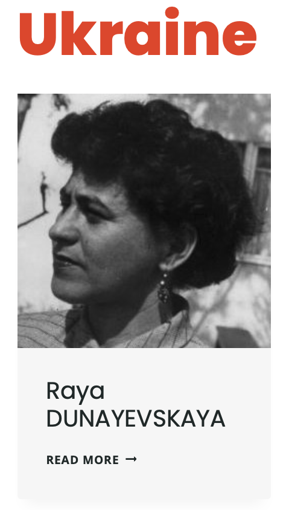Par exemple, nous avons ici, la seule économiste ukrainienne recensée à travers le temps (Figure 34), grâce au travail de recherche de nombreux contributeurs qui vont chercher à identifier le maximum de ces personnes appartenant à une minorité, tout en travaillant sur des archives afin d’établir des bibliographies les plus complètes possibles.
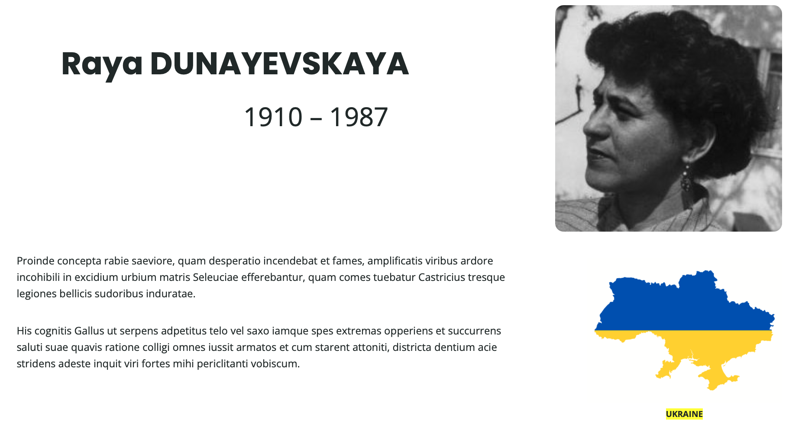Figure 34 — Bibliographie de l'économiste ukrainienne Raya Dunayevskaya
Titre : Quand la météo s'emballe - Tour des grandes catastrophes climatiques, ou liées au climat, du 21e siècle
Auteur : Perrin Remonté
Date de parution : Publié le 29 Janvier 2026 sur LinkedIn
Figure 35 — Les grandes catastrophes climatiques du 21e siècle
Cette carte du monde intitulée "Quand la météo s'emballe - Tour des grandes catastrophes climatiques, ou liées au climat, du 21e siècle" visualise l'impact du changement climatique à travers la vulnérabilité régionale aux événements météorologiques extrêmes (Figure 35), dont les données sont issues de 427 climate et de FERDI (Fondation pour les Études et Recherches sur le Développement International).
La représentation utilise un fond choroplèthe bicolore : le vert désigne les régions du Monde les moins vulnérables aux événements météorologiques extrêmes (vagues de chaleur, inondations, incendies, cyclones...), tandis que le rose identifie les régions du Monde les plus vulnérables aux événements météorologiques extrêmes. Cela est calculé selon un indicateur de vulnérabilité au changement climatique (PVCCI), qui mesure les chocs climatiques et l'exposition des pays et de leurs territoires à ces chocs. L’auteur de la carte, Perrin Remonté, fait remarquer que les zones en rose sont celles qui paieront le prix le plus cher. L'ironie veut qu'il s'agisse principalement des pays en développement, avec une contribution relativement faible aux foudres du climat qui rend plus fréquent et plus puissant ces épisodes violents.
On remarque un frise chronologique qui est de la même couleur (vert et rose) que les zones de la carte, malgré qu’il n’y ai pas de lien entre la dimension temporelle et l'indicateur de vulnérabilité, cela peut fausser la lecture de la carte et de la frise.
Cette frise chronologique de 2000 à 2025 liste les événements catastrophiques majeurs en réutilisant exactement les mêmes codes couleurs rose/vert que la carte, mais sans aucune signification temporelle ou qualitative. Sur la frise, les symboles roses et verts se succèdent de manière apparemment aléatoire (cyclones roses et verts, vagues de chaleur roses et vertes côte à côte) sans que cette distinction chromatique n'exprime une différence d'intensité, de localisation ou de catégorie. Cette réutilisation du même système colorimétrique pour deux variables différentes (vulnérabilité spatiale sur la carte VS nature des événements dans le temps) crée une confusion cognitive : le lecteur cherche instinctivement une cohérence sémantique entre les couleurs de la carte et celles de la frise, alors qu'aucune n'existe. Une frise temporelle aurait dû employer un code couleur neutre ou distinct, ou mieux, une typologie symbolique cohérente indépendante du fond cartographique.
Malgré cela, la carte remplit efficacement son objectif de dénonciation des inégalités climatiques, illustrant visuellement l'ironie géopolitique où les pays les moins responsables du réchauffement subissent les impacts les plus sévères. Cependant, l'ambiguïté sémiologique affaiblit la rigueur du message scientifique en introduisant une lecture confuse de la temporalité des catastrophes.
Titre : Le risque d'exposition aux vagues de chaleurs à l'horizon 2050 pour les habitants âgés
Auteur : Pauline Allée (AREC Nouvelle-Aquitaine), Denis Vannier (RésO Villes), Antoine Roy (Human Adaptation Institute), Adrien Salem-Sermanet (celest.science) et Marc Le Moing (AUDAP)
Date de parution : Projet initié en décembre 2025
Figure 36 — Site liée aux risques d'expositions aux vagues de chaleur à l'horizon 2050 pour les populations âgées en France
Cette carte interactive intitulée "Populations et changement climatique" visualise le risque d'exposition aux vagues de chaleur à l'horizon 2050 pour les populations âgées en France. Développée lors du hackathon "Le climat en données" organisé par Météo France et data.gouv en décembre 2025, elle compile des données issues de Météo France (modèles climatiques CPRCM), de l'Insee (bases Filosofi et projections démographiques Omphale) et d'OpenStreetMap pour le fond de carte.
La représentation cartographique repose sur une sémiologie des cercles proportionnels dont la surface représente la population âgée de 65 ans et plus par secteur géographique, combinée à une palette de couleurs graduée allant du jaune (moins de 5 jours de vagues de chaleur par an) au rouge foncé (plus de 40 jours), exprimant l'intensité de l'exposition climatique projetée avec un scénario de réchauffement de +2,7°C.
L'interface propose un bouton de bascule temporelle permettant de comparer deux états : la "situation démographique et climatique actuelle" et la "population âgée en 2050 impactée par un réchauffement de +2,7°C" (Figure 36). Lorsque l'utilisateur survole sur un cercle, un popup s'affiche avec des informations détaillées sur le secteur sélectionné (nombre exact de personnes âgées en 2050 et nombre de jours de vagues de chaleur en 2050 (comparé à aujourd'hui)). Cependant, l'interactivité reste très limitée et l’absence d'options de requête spatiale ou de sélection multiple restreint les possibilités d'analyse approfondie. De plus, l'affichage est volontairement allégé en excluant les secteurs comptant moins de 50 personnes/km², ce qui peut masquer des vulnérabilités locales en zones rurales peu denses mais néanmoins exposées.
Cette carte constitue un outil pédagogique efficace pour visualiser la double vulnérabilité (démographique et climatique) et sensibiliser aux enjeux d'adaptation territoriale face au vieillissement et au réchauffement climatique, tout en appelant à des développements plus avancés pour une véritable exploitation analytique.
Titre : Explorez les forêts françaises
Auteur : Office National des Forêts (ONF)
Date de parution : Début 2026
Figure 37 — Les forêts publiques remarquables françaises
Cette carte interactive "Explorez les forêts françaises" développée par l'Office National des Forêts propose une visualisation ludique et pédagogique du patrimoine forestier public français (Figure 37). La représentation cartographique adopte un style illustratif et accessible, avec un fond de carte de France simplifié en gris clair sur lequel sont positionnés des cercles qui géolocalisent les forêts publiques remarquables. L'interface utilise une sémiologie des symboles ponctuels uniformes (cercles de taille identique) qui privilégie la lisibilité à la hiérarchisation quantitative. Le design graphique intègre des éléments décoratifs naturalistes (arbres stylisés, faune illustrée, chouette, renard, oiseaux, …) créant une atmosphère forestière immersive qui contraste avec la sobriété habituelle des cartes institutionnelles.
Un aspect cartographique particulièrement remarquable réside dans l'intégration visible des Départements d'Outre-Mer en partie inférieure de la carte : Guadeloupe, Martinique, Guyane Française, La Réunion et Mayotte sont représentés avec leurs forêts respectives matérialisées par les mêmes cercles turquoise. Cette inclusion cartographique systématique des territoires ultramarins, souvent absents ou relégués en encart des représentations métropolitaines, affirme une volonté d'équité territoriale et reconnaît l'importance écologique majeure des forêts tropicales et équatoriales d'outre-mer dans le patrimoine forestier français. Cette représentation complète permet de visualiser la diversité biogéographique exceptionnelle de la France, de la forêt tempérée métropolitaine aux forêts tropicales humides guyanaises.
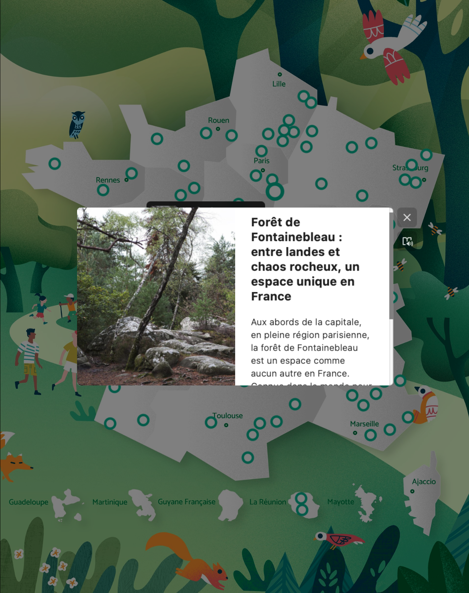Figure 38 — PopUp concernant la forêt de Fontainebleau
Lorsque l'utilisateur clique sur un cercle, un popup modal s'ouvre avec une structure narrative : photographie forestière, nom de la forêt et texte de présentation rédigé par les forestiers ONF décrivant les caractéristiques écologiques, patrimoniales et culturelles du massif. Ces contenus valorisent l'expertise terrain des agents forestiers et créent une médiation humaine entre le public et les espaces naturels (Figure 38).
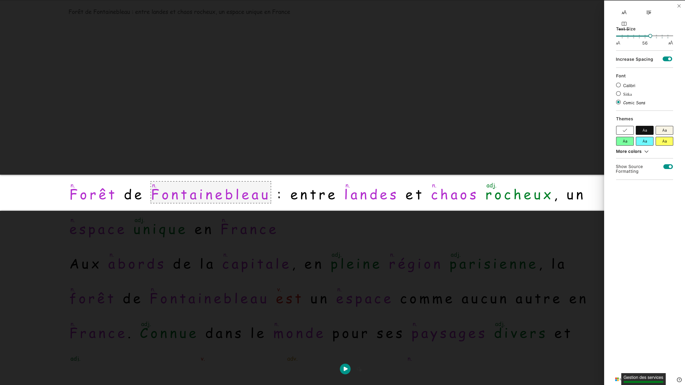Figure 39 — Paramètres audios et visuels liés au popup
La carte intègre des fonctionnalités d'accessibilité essentielles. Un bouton de lecture vocale permet aux personnes déficientes visuelles ou en situation de handicap cognitif d'écouter le contenu textuel des popups, transformant l'information écrite en contenu audio. Cette fonctionnalité de synthèse vocale rend l'interface conforme aux principes de conception universelle. De plus, la carte intègre la possibilité de changer les paramètres visuels du texte, par exemple pour la dyslexie, le daltonisme, ou encore agrandir la taille du texte, créer des focus sur une seule ligne du texte, distinguer les adverbes, noms, … par couleur de mots, ainsi que la possibilité de traduire le texte dans d’autres langues (Figure 39).
Cette carte démontre qu'une approche cartographique peut concilier rigueur scientifique (géolocalisation précise), accessibilité numérique (lecture vocale, contraste), inclusivité territoriale (représentation des DOM) et médiation pédagogique (narration illustrée). Cependant, l'absence de différenciation visuelle entre les forêts (toutes représentées par le même symbole) limite les possibilités d'analyse comparative et pourrait être enrichie par une typologie forestière ou une indication de superficie.
Titre : Star Wars OUTLAWS - Interactive map
Auteur : Communauté MapGenie
Date de parution : 2024
La carte interactive de Toshara, développée par MapGenie pour le jeu vidéo Star Wars Outlaws (Ubisoft, 2024), constitue un outil d'aide à l'exploration destiné aux joueurs naviguant dans cet univers de fiction spatiale. Cette carte interactive revêt une importance particulière pour moi, ayant accompagné plusieurs dizaines d'heures d'exploration durant mon temps libre dans cet univers (Figure 40).

Figure 40 — Animation montrant les cartes du monde de StarWars Outlaws pour la Lune de Toshara
Toshara est une lune imaginaire présentée comme une savane dangereuse balayée par des vents violents, anciennement habitée par le peuple Tosharan et désormais contrôlée par des syndicats criminels dans l'univers Star Wars. La représentation cartographique adopte une projection planaire en vue aérienne du terrain de jeu, avec un fond de carte topographique stylisé montrant le relief, les zones urbaines (capitale Mirogana, colonie Jaunta's Hope), les routes, et les différentes régions géographiques (Grazing Fields, Boulder Forest, Lost Steppe, Southern Falls). Cette cartographie fictive s'inspire des codes visuels de la cartographie réelle : utilisation d'une échelle implicite, d'une orientation nord-sud conventionnelle, de symboles ponctuels différenciés par couleur et forme pour localiser les points d'intérêt et d'une hiérarchie visuelle distinguant routes principales et secondaires.
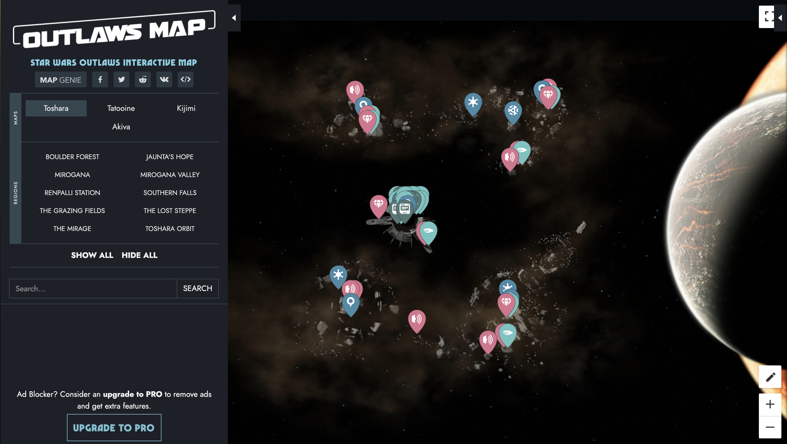Figure 41 — Missions se trouvant dans l'orbite de Toshara

Figure 42 — Missions se trouvant sur Toshara
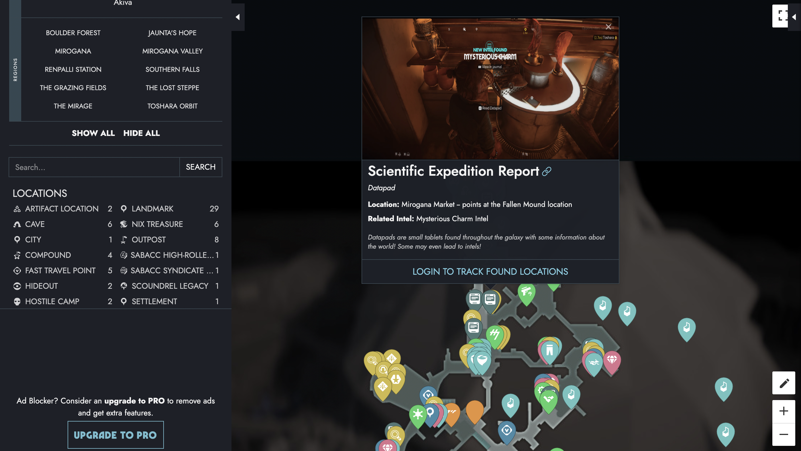Figure 43 — Missions se trouvant dans la capitale Mirogana
Ce qui est aussi intéressant, c’est la diversité des échelles cartographiques, par exemple au niveau de l’orbite de cette lune (Figure 41), puis au niveau de l’ensemble des villes (Figure 42), pour finir avec des plans (presque architecturaux) de la capitale Mirogana (Figure 43).
La carte recense plusieurs centaines de points d'intérêt géolocalisés avec une précision pixel correspondant aux coordonnées in-game. Les données collectées par la communauté de joueurs incluent : trésors (Nix Treasures, Smuggler Chests), collectibles (Jet's Journals, ISB Reports, Holodramas, Datapads, Transmissions), quêtes (Main Quests, Side Quests, Expert Quests, Faction Quests avec Pyke Syndicate, Crimson Dawn, Hutt Cartel, Ashiga Clan), services (Merchants, Mechanics, Tailors, Scavengers, Smugglers, Street Food Vendors), infrastructures (Fast Travel Points, Landing Zones, Imperial Terminals), et zones hostiles (Camps, Compounds, Outposts, Vaults). Le système de symbologie cartographique emprunte directement aux conventions de la cartographie topographique réelle : icônes normalisées par catégorie (trésor = coffre, marchand = étal, quête = point d'exclamation), codage colorimétrique thématique (quêtes principales en couleur distincte des quêtes secondaires), et légende structurée permettant le iltrage par couches thématiques. Cette transposition des principes sémiologiques classiques dans un contexte vidéoludique démontre l'universalité des codes cartographiques. De plus, il est possible d’ajouter de nouvelles données précieuses pour les joueurs (souvent la première année de sortie du jeu).
L'interface propose des fonctionnalités de filtrage avancées permettant de n'afficher que certaines catégories d'objets (par exemple, uniquement les matériaux d'artisanat ou les quêtes d'une faction spécifique), facilitant la planification d'itinéraires optimisés pour compléter le jeu à 100%. Un système de tracking de progression permet aux joueurs de cocher les éléments déjà collectés ("Mark as Acquired"), transformant la carte en véritable outil de gestion de projet ludique avec compteurs de complétion par catégorie. Les popups interactifs affichent des descriptions détaillées, images de référence, et parfois vidéos de localisation pour les trésors difficiles d'accès. La carte inclut également des annotations stratégiques (exemple : "pour accéder à ce coffre, vous devez d'abord améliorer votre speeder avec le module de saut" ou "nécessite une bonne réputation avec le Pyke Syndicate"), intégrant la dimension narrative et de progression RPG du jeu. MapGenie propose des cartes similaires pour les cinq planètes explorables du jeu (Toshara, Kijimi, Tatooine, Akiva, Cantonica), créant un atlas complet de l'univers vidéoludique, mais aussi des centaines d’autres cartes interactives sur d’autres jeux comme Red Dead Redemption 2, Dead Island 2, Tiny Tina Wonderlands, Days Gone, Avatar - Frontiers of Pandora, …
Bien qu'il s'agisse de territoires entièrement fictifs n'existant que dans le code informatique, la rigueur cartographique appliquée illustre comment les jeux en monde ouvert ont adopté la carte comme interface centrale de navigation et de médiation spatiale. Cette pratique du "game mapping" communautaire s'inscrit dans une culture participative où les joueurs documentent collectivement les univers virtuels avec des méthodes empruntées à la géographie réelle, créant une forme de cartographie collaborative d'espaces imaginaires. L'avertissement accompagnant généralement ces cartes ("si vous souhaitez découvrir le jeu par vous-même, nous vous déconseillons d'utiliser un tel outil") souligne la tension entre aide à la navigation et préservation de l'exploration spontanée, questionnant le rôle de la carte comme outil de révélation ou de spoliation de la découverte spatiale.
Titre : New library to visualize zarr on MapLibre and Mapbox maps : @carbonplan/zarr-layer
Auteur : Shane Loeffler (inspiré du travail de Chris Arderne, de Tobias Ferreira et de Trevor Manz)
Date de parution : Janvier 2026
Figure 44 — Interface de la librairie zarr montrant la température par rapport aux précipitations par mois
Cette carte interactive réalisée par Shane Loeffler démontre les capacités de la bibliothèque @carbonplan/zarr-layer, un outil de visualisation de données zarr (format de stockage multidimensionnel optimisé) sur des fonds cartographiques MapLibre et Mapbox. La représentation cartographique affiche des données Raster climatiques et environnementales en temps quasi-réel, utilisant une palette de couleurs graduée pour visualiser des variables géophysiques (température, précipitations, concentrations atmosphériques). L'interface repose sur un système de tuiles vectorielles dynamiques qui charge uniquement les chunks de données pertinents selon l'échelle de zoom et l'emprise géographique visible, optimisant ainsi les performances de rendu pour des datasets volumineux (Figure 44).
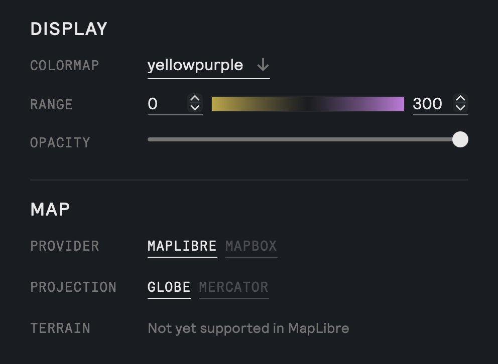Figure 45 — Paramétrage des visualisations
L'interface intègre un panneau de contrôle latéral permettant une manipulation fine des paramètres de visualisation. Les utilisateurs peuvent ajuster la palette de couleurs, modifier les seuils de classification et contrôler l'opacité de la couche raster pour superposer plusieurs variables (Figure 45). Un système de curseurs interactifs permet de naviguer dans les dimensions temporelles des datasets (sélection d'années, de mois, de périodes climatiques), transformant la carte en outil d'exploration spatio-temporelle.
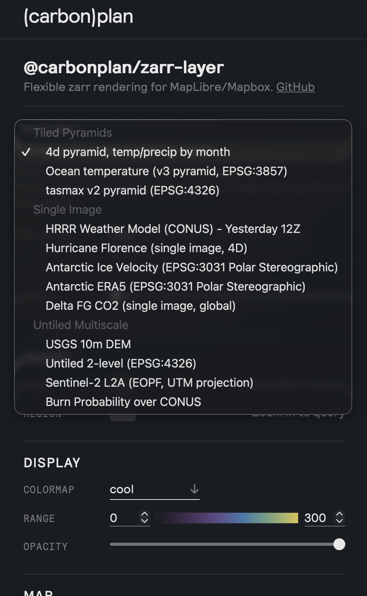Figure 46 — Sélection du jeu de données à visualiser
La carte propose une interactivité multicouche sophistiquée. Un menu déroulant permet de sélectionner différents datasets (multiples variables climatiques, modèles de projection, …), chacun avec ses propres métadonnées et structures dimensionnelles (Figure 46). Le système supporte des requêtes spatiales interactives : en cliquant sur un point de la carte, cela affiche les valeurs pixellaires précises et peut générer des graphiques de séries temporelles extraites pour ce point géographique, visualisant l'évolution de la variable sélectionnée sur plusieurs décennies.
Un aspect fondamental du projet réside dans sa philosophie open-source et reproductible. Le code source complet est accessible sur GitHub , permettant aux développeurs de cloner, modifier et adapter la bibliothèque pour leurs propres besoins cartographiques. La documentation technique explique comment configurer des shaders personnalisés, intégrer de nouveaux datasets zarr et ajuster les algorithmes de chargement de chunks. Les utilisateurs peuvent ainsi créer leurs propres applications cartographiques en modifiant les fichiers de configuration, en changeant les sources de données (n'importe quel dataset zarr compatible), tout en personnalisant l'interface utilisateur. Cette approche modulaire favorise la réutilisation scientifique et permet aux équipes de recherche de déployer rapidement des outils de visualisation adaptés à leurs données spécifiques, tout en bénéficiant d'une infrastructure de rendu optimisée.
Le projet s'inspire de bibliothèques antérieures (zarr-gl de Chris Arderne, zarr-cesium de Tobias Ferreira) tout en intégrant zarrita de Trevor Manz pour le chargement efficace des données. L'équipe reconnaît plusieurs axes d'amélioration : extension au-delà des systèmes de projection Web Mercator (EPSG:3857) et WGS84 (EPSG:4326) pour supporter des projections polaires ou régionales, correction de bugs existants, et enrichissement des fonctionnalités analytiques.
Cette carte interactive illustre comment les technologies modernes de visualisation géospatiale, combinées à des formats de données optimisés et une philosophie open-source, démocratisent l'accès à l'analyse cartographique avancée pour la recherche climatique et environnementale.
Titre : Direction Générale des Routes et de la Mobilité : Modernisation outil métier - SIG Signalisation
Auteur : DGRM du canton de Vaud, Suisse
Date de parution : Fin 2025
Figure 47 — Cartographie des équipements de signalisation routière
Cette carte interactive développée pour la Direction Générale des Routes et de la Mobilité (DGMR) du Canton de Vaud illustre la modernisation du système SIG SI (Signalisation Intelligente) migré vers ArcGIS Experience Builder. La représentation cartographique repose sur un fond orthophotographique à très haute résolution (imagerie satellite) sur lequel sont superposés des symboles vectoriels ponctuels (points verts) géolocalisant précisément les équipements de signalisation routière (feux tricolores, panneaux de signalisation, dispositifs lumineux). La visualisation montre un carrefour complexe avec passages piétons marqués en jaune, trajectoires de circulation, et plusieurs véhicules, permettant une analyse contextuelle de l'infrastructure (Figure 47). Les données affichées proviennent d'un SIG métier intégrant les inventaires techniques, les attributs de maintenance, et potentiellement des données de trafic en temps réel.
L'interface présente un panneau de propriétés latéral affichant les attributs détaillés de l'objet sélectionné (ici un feu de signalisation). Des métadonnées exhaustives s’affichent dans un popup et transforment la carte en base de données spatiale consultable, permettant aux techniciens routiers d'accéder instantanément aux caractéristiques de chaque équipement pour planifier interventions de maintenance, remplacements, ou analyses de performance.
Au-delà de cet inventaire, ce type de cartographie ouvre des perspectives de gestion intelligente en temps réel. Le système pourrait évoluer vers une télégestion dynamique des feux tricolores permettant d'ajuster à distance les cycles de signalisation selon les conditions de trafic, d'activer des plans de feux d'urgence lors d'accidents ou d'événements, ou de prioriser les transports publics et véhicules d'urgence. En cas de gestion de crise (incendies, inondations, déviations d'urgence), les opérateurs pourraient modifier instantanément depuis la carte les paramètres de signalisation pour sécuriser les zones sinistrées, guider les évacuations, ou faciliter l'accès des services de secours. L'intégration de capteurs intelligents (détection de présence, comptage de véhicules, caméras de surveillance) transformerait la carte en tableau de bord opérationnel visualisant les flux en direct. Le système pourrait également intégrer la maintenance prédictive, en alertant automatiquement sur les équipements nécessitant une intervention (durée de vie atteinte, pannes détectées, consommation énergétique anormale des LED). Pour les situations d'urgence comme les feux de forêt ou accidents majeurs, la plateforme permettrait de coordonner les interventions en affichant simultanément la position des équipes, l'état de la signalisation ou encore les itinéraires d'évacuation optimaux.
Cette modernisation s'inscrit dans une démarche de mobilité durable et d'optimisation territoriale, permettant une planification terrain plus efficace, une réduction des temps d'intervention, et une meilleure allocation des ressources de maintenance. La migration vers ArcGIS Experience Builder garantit également une évolutivité technique et une interopérabilité avec d'autres systèmes d'information cantonaux, positionnant le Canton de Vaud à l'avant-garde de la gestion intelligente des infrastructures routières en Suisse.